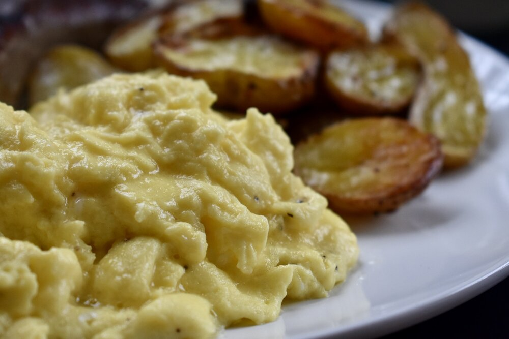

Scrambled Eggs

Description
This is a guide on how to make the most fluffy, amazing, delicious
scrambled eggs you have ever had in your life
Ingrediants
- White or Brown Eggs
- Milk
- Salt
- Pepper
- Butter
Steps
- In a medium mixing bowl, aggressively whisk together the eggs,
half-n-half, and salt until the mixture is uniform in color and texture,
and is light and foamy, without any separate streaks of yolk or whites.
- Melt the butter in a small nonstick pan over medium heat, until the butter
coats the whole pan and just starts to foam.
- Add the eggs to the center of the pan and immediately reduce the heat to medium-low.
- Wait for the edges to just barely start to set, then using a rubber spatula,
gently push the eggs from one end of the pan to the other. Continue this process,
pausing in between swipes to allow the uncooked egg to settle on the warm pan and cook,
gently pushing the liquid to form the curds.
- When the eggs are mostly cooked, with big pillow-y folds, but still look pretty wet,
slowly fold the eggs into itself just a couple times, bringing them together.
- Remove from the heat when the eggs still shimmer with some moisture.
- Transfer to serving plates. Finish with some freshly cracked pepper and chopped fresh
herbs. Scrambled eggs have never tasted so good!